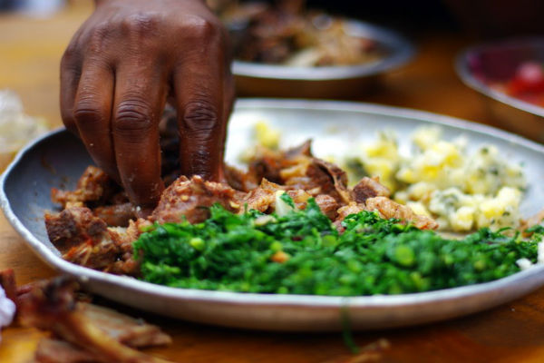

Kenya
Intrepid marathon runners and exhilarating safari adventures are not the only things Kenya is famous for. The country offers a variety of yummy dishes too, and one of them is nyama choma, Kiswahili for roasted meat. No spices here – the meat is only seasoned with salt and slow-grilled over hot coals until it’s tender and ready to please your palate. While everything from chicken to beef makes for good nyama choma, the favourite is always goat meat, both for its distinct taste and chewiness. Nyama choma is always good companions with a relish of thinly sliced raw tomatoes and onion, and goes down well with a cold local Tusker beer. You can also pair nyama choma with irio, a highly nutritious dish made from mashed potatoes, green peas, corn, and pumpkin leaves.